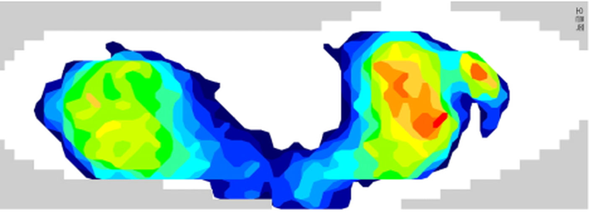
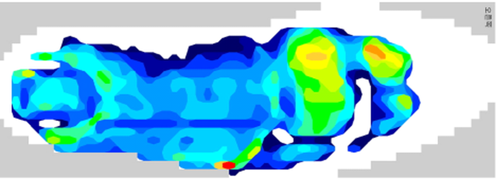

맨발일 때 비어 있던 아치 아래까지 닿고,
압력이 한쪽에 덜 몰리고 넓게 퍼졌습니다.


맨발에서 끊겨 있던 가운데 부분이
인솔 위에서는 이어져 보입니다.
한쪽 끝에 모이던 주황·빨간 구간이 줄고
파란·초록 구간이 넓어졌습니다.
※ 특정 보행 1회의 족저압 분포 측정 결과이며 전체 보행 평균이 아닙니다.
※ 발 모양·걸음걸이·신발에 따라 결과는 다를 수 있습니다.
※ 시험기관 [ ] · 성적서 번호 [ ] · 아치가득 인솔은 의료기기가 아닙니다.